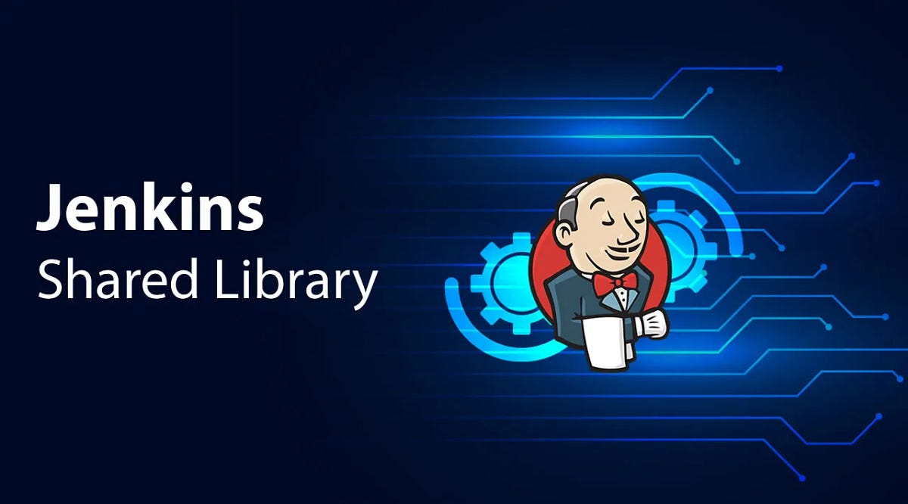
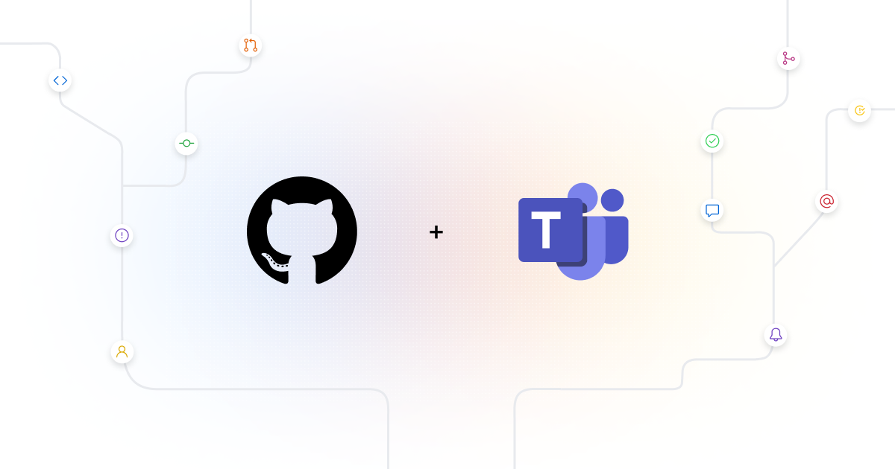

About me
🔧 Mechanical engineer turned tech enthusiast with a cosmic twist! I earned my Bachelor's degree in Mechanical Engineering from SPPU university
and kicked off my career journey with one of the consulting giants, Capgemini FS.
At Capgemini, I delved into the dynamic world of software deployment projects, taking on the role of a DevSecOps Engineer, ensuring seamless transitions to the cloud.
🌌 Beyond the tech realm, I'm captivated by the wonders of astronomy and the cosmos, often finding solace in reading diverse books.
Balancing my professional pursuits, I channel my energy into social work and proudly run an NGO along with my mates. The stars in the sky are not the only heights I explore—I'm also an avid trekker,
finding inspiration in both the vast cosmos and the beauty of nature.


This project streamlines repository management by automating the cleanup of outdated branches, enhancing version control efficiency. With seamless integration into GitHub Actions, it ensures a tidy codebase, promoting collaboration and reducing clutter. Experience the power of automated branch maintenance for a more organized and productive development workflow.

This initiative optimizes Jenkins pipelines by centralizing and reusing common functionalities, fostering consistency and reducing redundancy across projects. With a well-crafted shared library, experience streamlined development workflows, enhanced maintainability, and the flexibility to scale automation seamlessly. Elevate your Jenkins experience with this robust and customizable solution for accelerated software delivery.

This innovative solution seamlessly integrates with your build deploy pipeline, delivering real-time deployment status notifications directly to your Microsoft Teams channel. Stay informed with comprehensive repository details, ensuring transparency and quick response to any deployment issues. Experience the advantages of enhanced collaboration, quicker issue resolution, and a more informed development team, all through automated deployment status updates on your preferred communication platform—Microsoft Teams." .